Keşfedilecek Rotalar
Bursa'nın eşsiz güzelliklerini adım adım keşfedin

Doğa & Kültür Rotaları
2543 Metreye Yolculuk
Uludağ'ın zirvesine yolculuk.

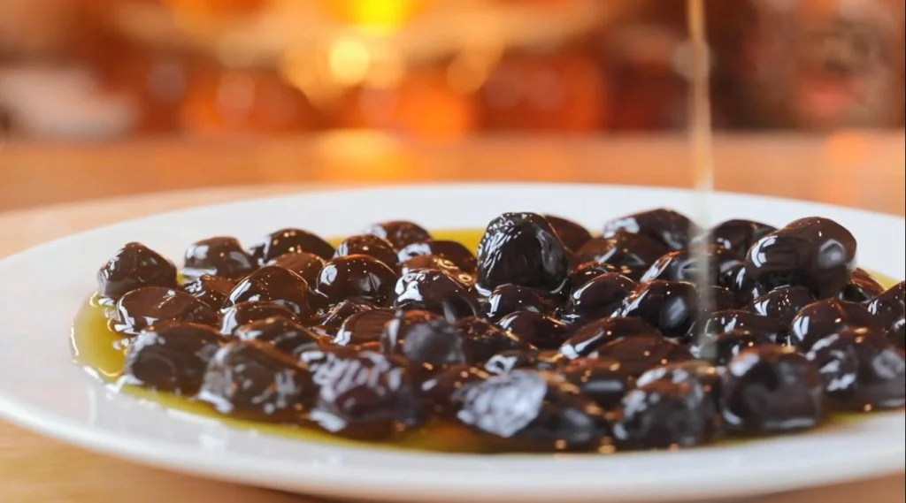
Gastronomi & Kültür Rotaları
Zeytin ve Zeytinyağı Rotası
Güney Marmara'nın zeytin rotasını keşfedin.
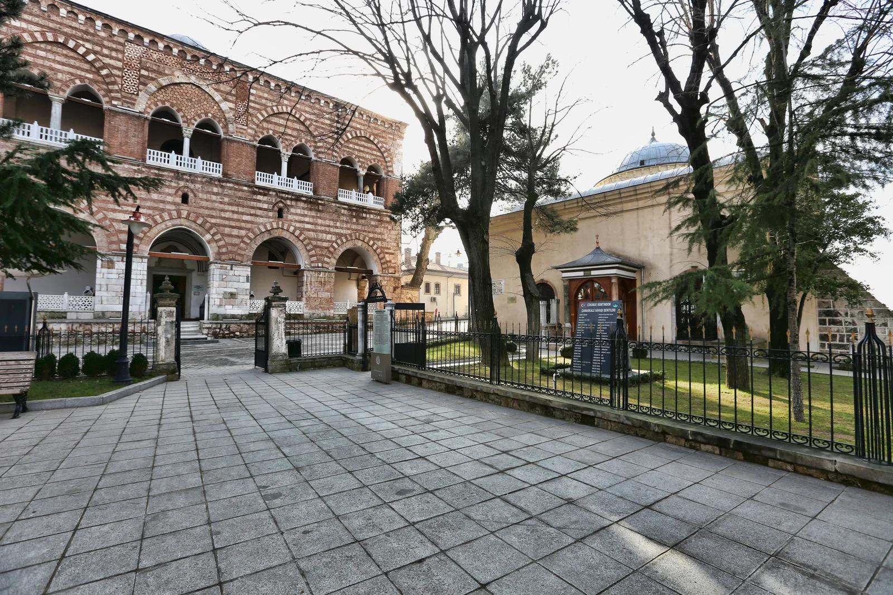
Tarih & Kültür Rotaları
Osmanlı Padişahları Turu
Osmanlı padişahlarının izinden Bursa.
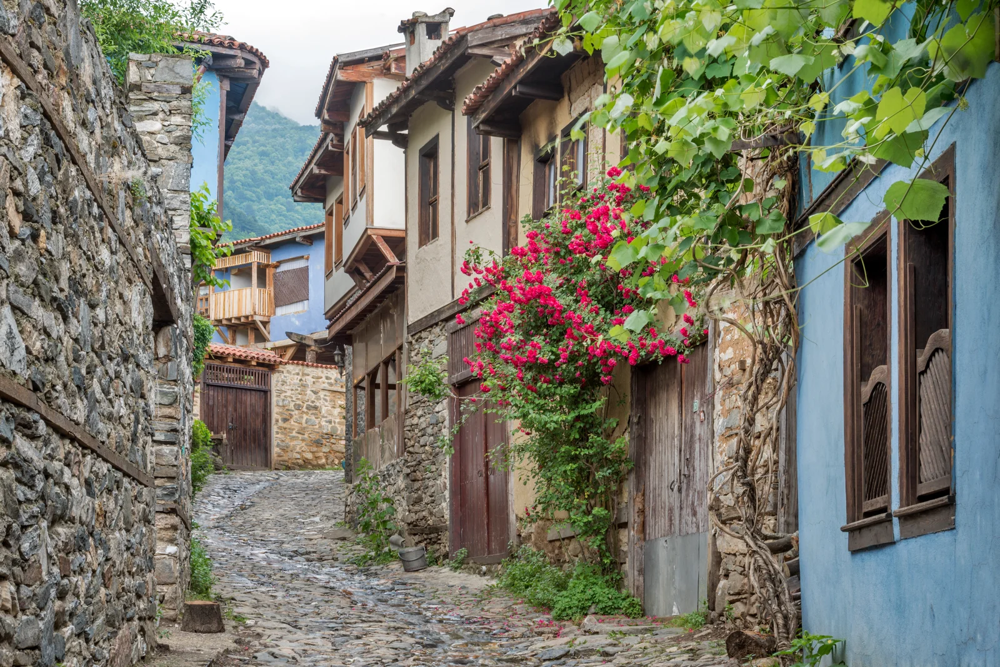
Tarih & Kültür Rotaları
Bir Günde Bursa Turu
Bursa'nın en önemli noktalarını bir günde görün.
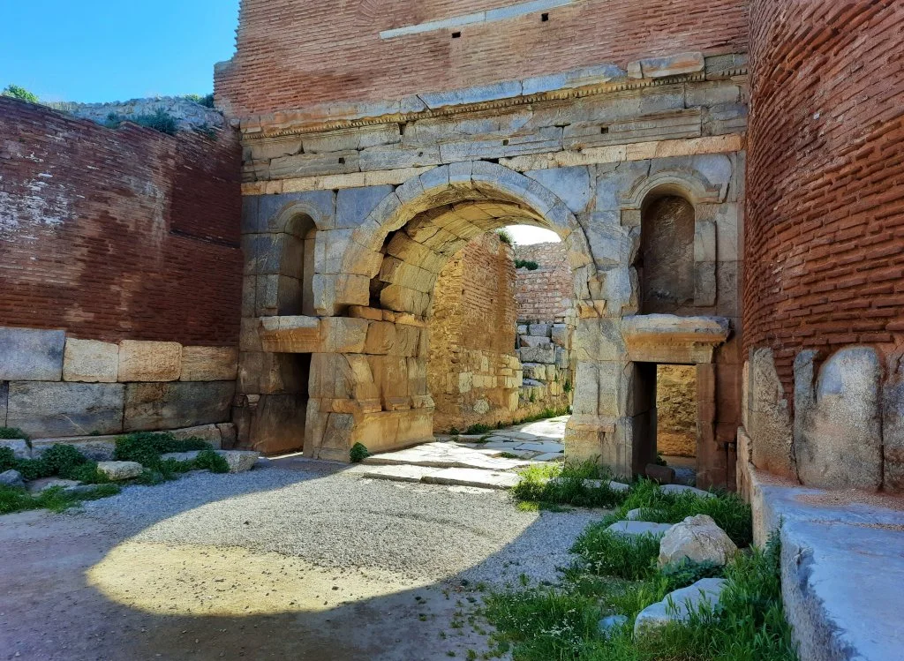
Doğa & Kültür Rotaları
Tarihten Doğaya İznik Rotası
İznik'in tarihini ve doğasını birlikte keşfedin.
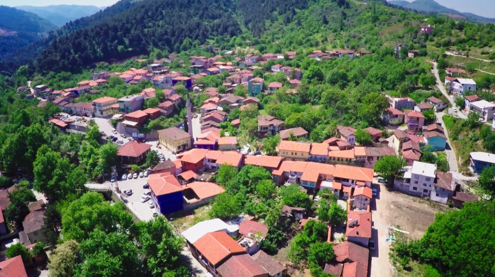
Doğa & Kültür Rotaları
Velhasıl Bursa Sudan İbarettir Turu
Bursa'nın su kaynaklarını ve termal değerlerini keşfedin.
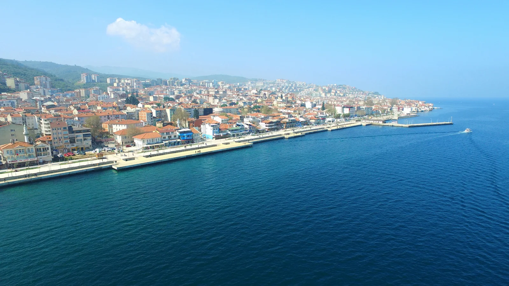
Doğa & Kültür Rotaları
Tuzlu Sudan Tatlı Suya: Mavi Rota
Marmara'dan göllere, Bursa'nın mavi rotası.
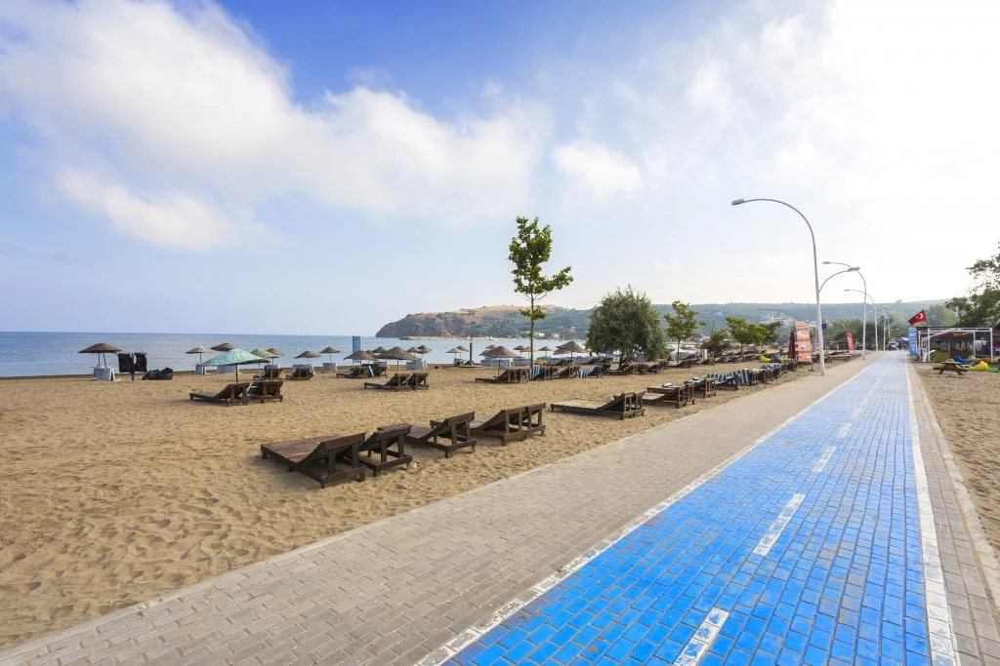
Doğa & Kültür Rotaları
Bir Nefeste Zeytin Bahçelerinden Antik Kente
Zeytin bahçeleri ve antik kentler arasında yolculuk.
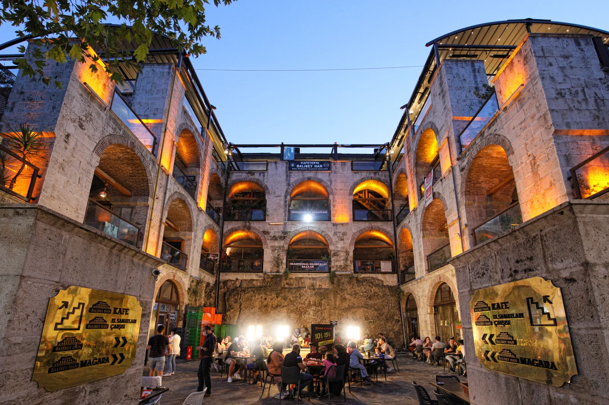
Tarih & Kültür Rotaları
On Bin Adımda Hanlar Bölgesi
Tarihi Hanlar Bölgesi'ni 10.000 adımda gezin.
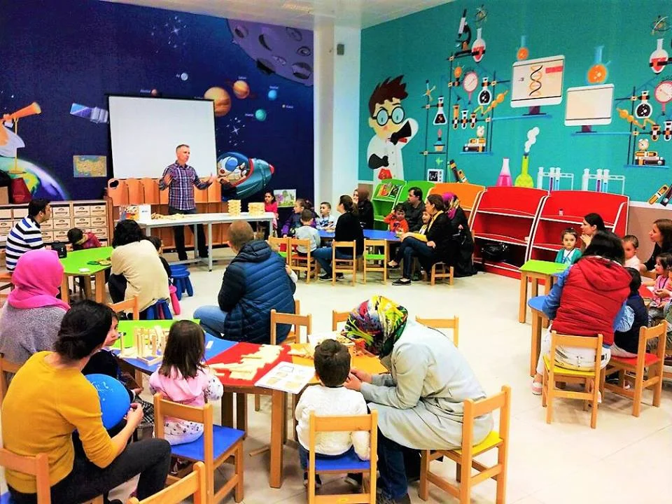
Tarih & Kültür Rotaları
Çocuğumla Geziyorum
Çocuklarla birlikte Bursa'yı keşfedin.
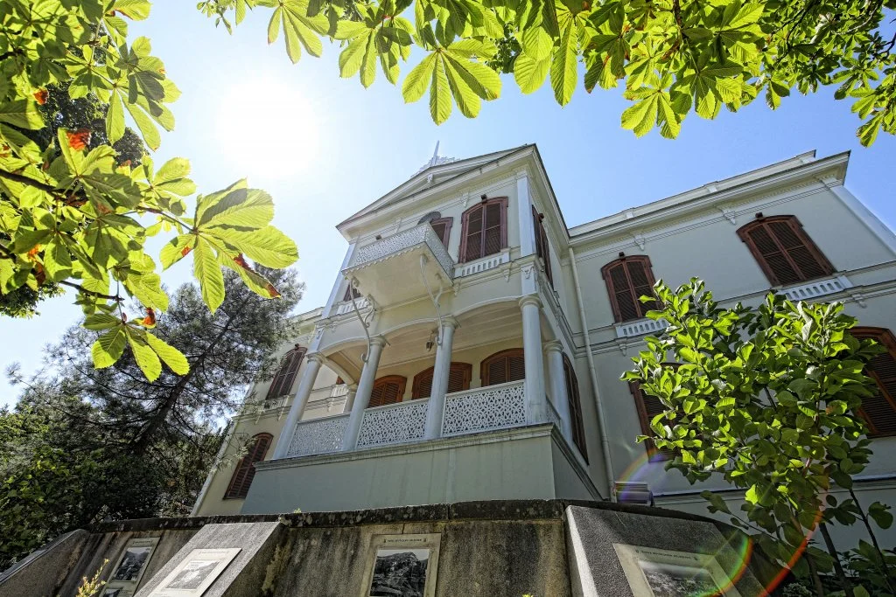
Tarih & Kültür Rotaları
Müzeler Şehri Bursa
Bursa'nın zengin müze koleksiyonlarını keşfedin.
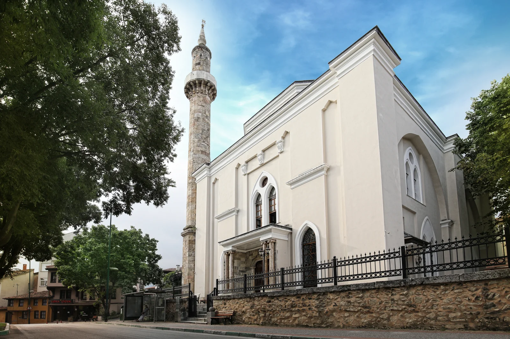
Tarih & Kültür Rotaları
Bursa Kalesi'nde Bir Gün
Tarihi Bursa Kalesi'ni ve surlarını keşfedin.
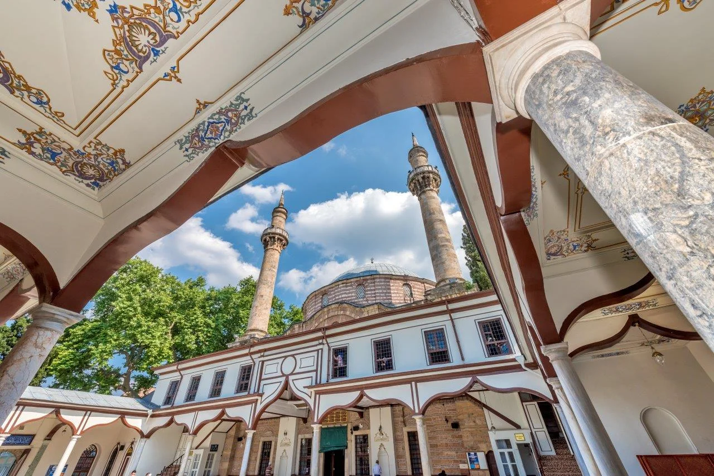
Tarih & Kültür Rotaları
Evliyalar Şehri Bursa
Bursa'nın manevi atmosferini yaşayın.
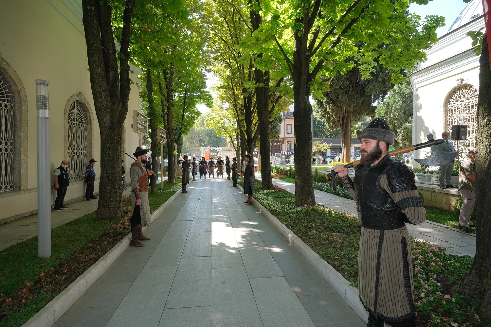
Tarih & Kültür Rotaları
Adım Adım Bursa
Bursa'nın tarihi merkezini adım adım keşfedin.
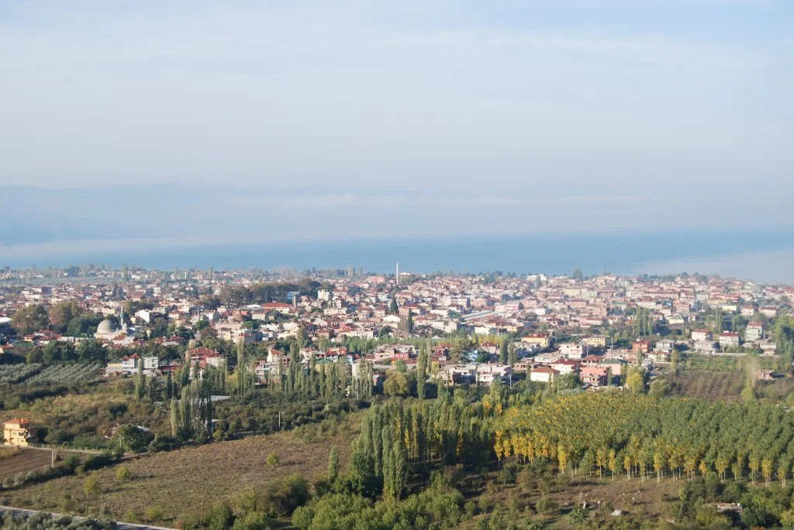
Tarih & Kültür Rotaları
İznik: Dört Medeniyet Bir Başkent
Dört büyük medeniyete ev sahipliği yapmış İznik'i keşfedin.

Tarih & Kültür Rotaları
Merkezden Zirveye
Bursa şehir merkezinden Uludağ'ın zirvesine.